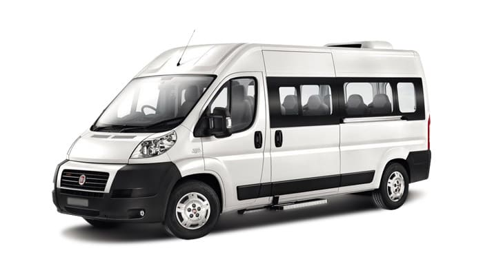

Transport événementiel à Marrakech
Anaconda Tours - Trans Marrakech SARL est une société de transport de personnes agréée par le ministère de l'équipement, du transport et de la logistique (décision PCT/ATT.T/8/2012). Nous organisons le transport d'invités et de pa
Anaconda Tours - Trans Marrakech SARL est une société de transport de personnes agréée par le ministère de l'équipement, du transport et de la logistique (décision PCT/ATT.T/8/2012). Nous organisons le transport d'invités et de participants pour les mariages, les séminaires et les événements, publics comme privés, de quelques personnes à plusieurs centaines.
Une expérience du transport d'événements depuis 2007
Une équipe d'interlocuteurs, d'assistants et de chauffeurs, joignable 24 h / 24 et 7 j / 7, prend en charge la mobilité de vos invités et de vos participants, de leur arrivée à leur départ.
Ce que nous étudions avant votre événement
Un événement réussi tient au bon acheminement des participants entre les points de ramassage et de dépose. Nous préparons chaque étape en amont et tenons compte de ce qui peut ralentir un trajet le jour J. Concrètement, nous nous engageons à :
- vérifier l'accessibilité des lieux selon les catégories de véhicules ;
- calculer les temps d'attente au ramassage et à l'accueil ;
- repérer à l'avance les lieux les moins connus ;
- évaluer l'état du trafic selon l'heure, les week-ends et les vacances, et vous proposer les horaires et les marges de sécurité à prévoir.
Un plan de transport adapté à votre budget
À partir des éléments que vous nous transmettez (nombre d'invités, lieux, horaires), nous construisons un plan de mouvement sur mesure, calibré pour votre événement et votre budget.
Notre flotte, jusqu'à 1000 passagers simultanément
Vans de luxe, minibus et autocars : notre parc peut assurer la mobilité de 1000 passagers simultanément. Les véhicules sont récents, climatisés et équipés pour le confort et la sécurité de vos invités.
Nos références
⟦EN ATTENTE : références évènementielles chiffrées à valider par Salah ; noms de clients seulement avec accord écrit⟧
Nous contacter
Trans Marrakech organise votre transport à Marrakech et dans tout le Maroc depuis 2007. Décrivez-nous votre événement, nous vous répondons avec un plan de transport et un devis.
Lot N° 148, Ain Mezouar, Imm Saada, Appt N° 1, Marrakech
Mobile et WhatsApp : +212 645 147 247
Téléphone : +212 524 435 162
E-mail : contact@trans-marrakech.com